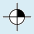
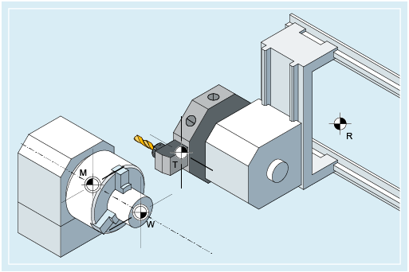
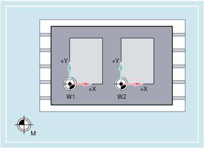

Various zero points and reference points are defined on an NC machine:
Zero points |
|---|
| | M | Machine zero The machine zero defines the machine coordinate system (MCS). All other reference points refer to the machine zero. |
| | W | Workpiece zero = program zero The workpiece zero defines the workpiece coordinate system in relation to the machine zero. |
| | A | Blocking point Can be the same as the workpiece zero (only for lathes). |
Reference points |
|---|
| | R | Reference point Position defined by output cam and measuring system. The distance to the machine zero M must be known so that the axis position at this point can be set exactly to this value. |
| | B | Starting point Can be defined by the program. The 1st tool starts machining here. |
|  | T | Toolholder reference point Is on the toolholder. By entering the tool lengths, the control calculates the distance between the tool tip and the toolholder reference point. |
 | N | Tool change point |
Zero points and reference points for turning

Zero points for milling
